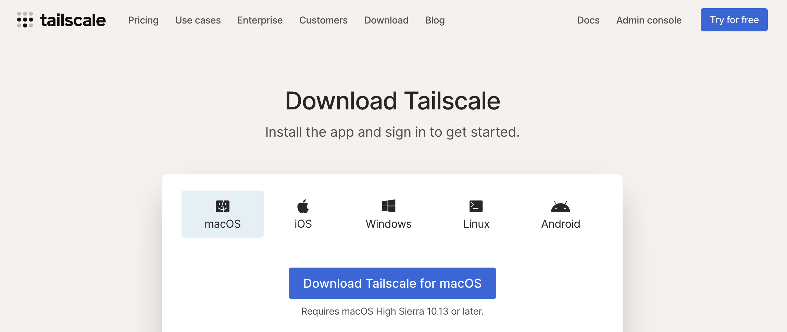
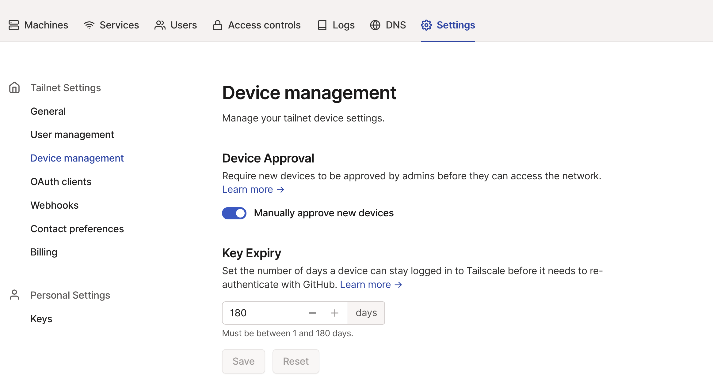
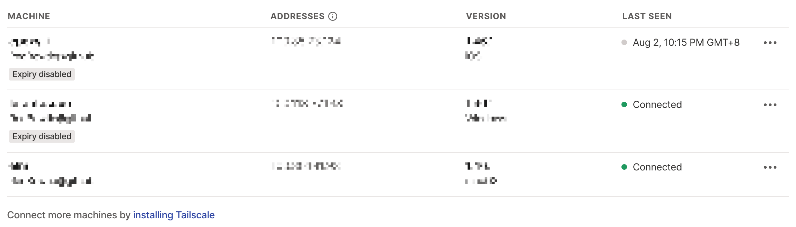

Create Personal Network with Tailscale
Table of Contents
Why I do this
Cannot sure since when have I had this idea of connecting all my personal computers together. Maybe it’s because I wanna remote my comupter, or pass through resources on my NAS, etc. The demand is there, but not quite strong.
In the past the most stable way was to ask for a public IP from ISP, or, some solution as zerotier, then rent a server as bridge to . However, these two method have some security issues, or potential ones. I had limited attention on this and I don’t wanna change some settings then jsut got hacked. That would be bad.
And one day I asked two of my friends who are acquainted with networks, they suggested innernet, tailscale, netmaker and wireguard. Among them, tailscale is the most convenient solution and works fine even without bridge server.
And, official guides are very helpful, which can be seen here
Installation
As tailscale based on open source WireGuard protocal, and even has GUI, supports variety of environment, installation may be simple as you want, download packages or using command line. both are OK.
links are here

Binding Machines
Take GUI as example. When you login, the next step would be asking you if you need to add it into your network. And for CLI version, it needs to set keys, but no loigin required.

Maybe you would think that 180 is still to short, then for any individual machine, you can disable expiry in Machines tab. Then you can see Expiry disabled

Test
As all similar services do, any joined machine would be assigned with a unique IP address (not only v4, but also v6). That’s how you could access other devices in your personal network. Considering my experience, using v6 when available is the best choice.
The simplest way to test is to use ping
As exposing IP add. is not safe, so jump to the conclusion.
Under exact same LAN, the average latency would be 30ms. The numbers increase and then reverse to small ones like 2ms. Which looks really strange, this could be my router behavior.
Onto a more practical approach, two of the devices are ipad/Mac using China Unicom cell data, and one is my NAS using wired network from the same ISP. Ipad used Microsoft RDP to control my NAS, when connection stablized, the lag was incredibly acceptable. On the Mac side, avg. ping requires 200ms.
Astonishing!
Subnet Routers
TBC..
Potential Problems
OK that is a mistake that I forget to turn off the enhanced mode of Surge